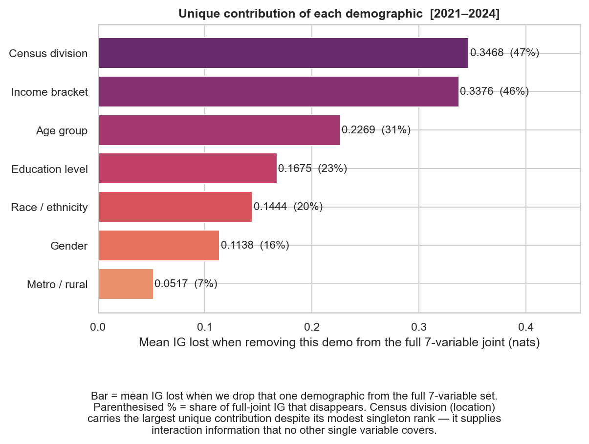

WIREFRAME v6 — 24" × 30" · ¼" border
UC BERKELEY · I SCHOOL
CivicSim
Demographically Grounded LLM Simulation of Public Opinion
01 · Background
Who uses population models?
Policymakers, forecasters, and researchers
rely on statistical approximations to predict how populations will respond —
before any vote is cast or dollar is spent.
2024
Polls failed to detect major shifts: specifically
under-sampled Hispanic communities —
missing the largest swing in Hispanic voting in modern U.S. history.
02 · Experiments: Root Causes
Why do these models fail?
① Unreliable data source
43%
under-represented
Black · rural · income <$30k
Pew ATP vs. U.S. Census
Black · rural · income <$30k
Pew ATP vs. U.S. Census
② Single-margin focus
age
or
education
or
income
Studied in isolation — joint effects often ignored
03 · Our Solution
① Who people are
U.S. Census ACS microdata —
3.5M+ respondents
vs. Pew ATP (~38K) or GSS (~3K/yr).
Most accurate population sample available.
vs. Pew ATP (~38K) or GSS (~3K/yr).
Most accurate population sample available.
② What they're saying
Pew ATP · 79 waves
7,728 opinion items across 10 domains —
intl. affairs, health, immigration,
technology, economy & more.
7,728 opinion items across 10 domains —
intl. affairs, health, immigration,
technology, economy & more.

04 · Results
~2×
More signal, same budget
Optimal {income+location+age} vs. conventional {age+income+education}
47%
Signal lost without geography
Drop census division → lose nearly half the predictive power


05 · Live Demo
App screenshot
(you'll provide)
(you'll provide)
UC Berkeley · School of Information · anagha_ananth@berkeley.edu